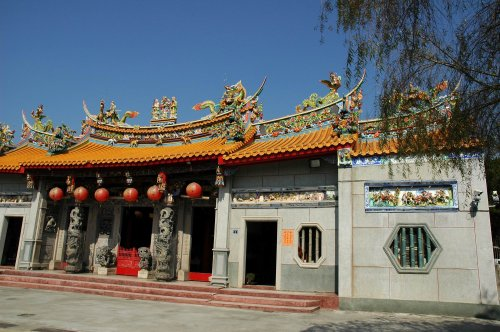
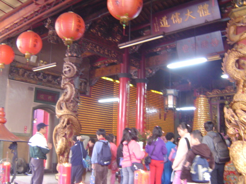

醒靈寺
民國5年，草創於日南，供奉關聖帝君，為埔里四大老廟之一。為三級古蹟，但尚未申報。
民國36年，奉天旨遷廟，民國40年於現址峻工。  廟址位於烏牛欄台地最東側，俯瞰愛蘭橋。愛蘭橋前身為烏牛欄吊橋，地形為一隘口，易守難攻。二二八事件時，台灣最後一波抵抗勢力在此集結，史稱烏牛欄之役。二二八事件在此畫上休止符。
主祀三恩主公：關公、呂洞賓、灶神。 出入廟宇，由青龍方入(面向廟門右側)，白虎方出。
在地方上的功能：早期的漢學學堂，亦為民間求藥之處，現今仍維持農曆每月三日、十三日及廿三日可前住求藥。 入山門前，二側神燈為日據時代，上虎頭山頂神社山路二旁之神燈。石獅為大埔城衙門之石獅，日據時，地震後移至虎頭山神社，神社毀圮後，才移至此。 廟前有榕樹，氣根發達，頂天立地。 廟西側有台地最大的一株香楠。
高年級學習單----我所認識的醒靈寺